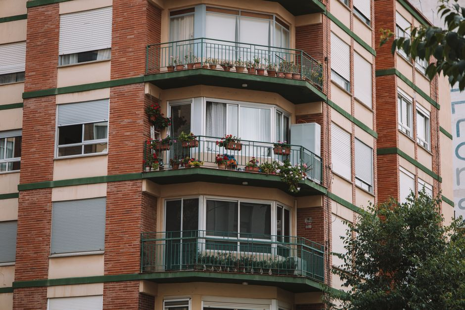

행복주택 갱신 심사, 2년마다 자격이 다시 심사가 됩니다 — 소득 초과 1회차 110%·2회차 120% 할증표

발행일 2026-10-06
행복주택은 계약이 2년마다 갱신됩니다. 문제는 이때 심사입니다. 갱신할 때마다 소득·자산·무주택 여부를 입주할 때와 똑같은 기준으로 다시 따집니다. 소득을 넘기면 1회에 한해 재계약이 되고, 그 대신 보증금·임대료가 110~140%로 올라갑니다. 초과 폭이 10% 이하면 1회차 110%·2회차부터 120%, 30%를 넘기면 1회차 130%·2회차부터 140%입니다.
30초 요약
| 항목 | 내용 |
|---|---|
| 대상 | 행복주택에 이미 살고 있는 입주자 전원 — 계약 만료 2년 주기가 돌아오는 사람 모두 |
| 심사 기준 | 처음 입주할 때의 계층 기준을 그대로 재적용. 청년·대학생·고령자는 월평균소득 100%(1인가구 120%·2인가구 110% 가산), 신혼부부는 100%(배우자 소득 있으면 120%). 총자산은 청년 2억 8,800만원·신혼·고령자 3억 2,500만원·대학생 8,600만원, 자동차는 3,557만원 이하(대학생은 미보유) |
| 초과 시 | 1회에 한해 재계약 가능, 보증금·임대료 110~140% 할증. 2회 연속 초과나 자산·자동차 초과는 재계약 거절(퇴거) 대상 |
| 기한 | 만기 전 갱신 안내를 받아 서류를 내고 심사(약 6~8주)를 통과해야 계약 유지. 미이행 시 계약 해지 |
| 최대 거주 | 대학생·청년 10년, 신혼부부·한부모 무자녀 10년·자녀 1명 이상 14년, 고령자·주거급여수급자 20년. 계층이 바뀌면 새 거주기간이 적용되나 통산 14년 초과 불가 |
1. 누가 받나 — 전 입주자가 대상입니다
갱신 심사는 형편이 나빠진 사람만 받는 시험이 아닙니다. 계약 2년이 끝난 입주자는 전원 대상이고, 보는 시점도 입주 때와 같게 재계약 시점의 소득·자산입니다. 살다가 승진·이직·결혼으로 소득이 늘었다면 그 결과가 그대로 들어갑니다.
대학생으로 들어왔다가 졸업·취업한 사람은 계층이 청년으로 바뀝니다. 이때는 청년 기준(본인 소득 중심)으로 새로 심사받고, 공급대상 변경 계약을 하면 바뀐 계층의 최대 거주기간이 새로 적용됩니다. 다만 전체 거주기간을 다 합쳐 14년을 넘길 수는 없습니다.
2. 무엇이 나오나 — 초과 폭별 할증표
소득 기준을 넘겨도 1회에 한해 재계약은 됩니다. 단 보증금과 임대료가 할증됩니다. 지금 내는 금액에 아래 배율을 곱하면 됩니다. 월 임대료 20만원이라면 1회차 120% 구간에서 24만원이 되죠.
| 소득 초과 폭 | 최신(1회차) 갱신 | 2회차 이상 갱신 |
|---|---|---|
| 10% 이하 | 110% | 120% |
| 10% 초과 ~ 30% 이하 | 120% | 130% |
| 30% 초과 | 130% | 140% |
여기서 한 가지를 더 짚어둡니다. 할증이 붙은 상태는 유예이지 합격이 아닙니다. 다음 갱신 심사에서 또 기준 초과가 확인되면 재계약이 거절될 수 있어요. 그래서 할증 기간 동안 소득·자산이 기준 안으로 내려왔는지 다음 심사에서 다시 확인해야 합니다.
자산과 자동차는 소득과 처리가 다릅니다. 총자산이나 자동차 가액 기준(2026년 청년 2억 8,800만원·자동차 3,557만원)을 넘기면 원칙은 퇴거 쪽으로 기울고, 거주 중 자녀가 태어난 가구에 한해 자동차를 제외한 자산 초과분에 대해 그 자녀가 성년이 되는 때까지 거주를 연장해주는 완화(보증금·임대료 130% 할증 적용)가 있습니다. 자동차 가액 초과는 이 완화의 예외입니다. 2024년 1월 1일 이후 출생아부터 적용되고 시행 이후 재계약부터 반영되므로, 해당되면 관리사무소에 본인 적용 여부를 먼저 확인하세요.
3. 제외·주의 — 숫자 말고 구조를 봐야 하는 곳
- 거주기간 총량 한도: 청년 10년, 신혼부부는 자녀 없으면 10년·1명 이상이면 14년, 고령자·주거급여수급자는 20년. 계층이 바뀌어 새로 계약을 해도 통산 14년(고령자·주거급여 제외 계층 간 이동 시)를 넘기지 못하는 상한이 있습니다.
- 거주기간 만료가 다가오면 만료 2개월 전까지 예비입주자나 재공급 희망자가 없어야 2년 연장이 검토됩니다. 즉 내가 나가기로 예정된 집에 다음 사람이 붙으면 연장은 없습니다.
- 무주택 자격은 갱신에서도 그대로 적용됩니다. 입주 기간에 분양권·주택을 사면 재계약 거절 사유입니다.
- 임대료·관리비 체납이 있으면 자동 갱신 대상에서 빠지고 계약 체결 방식(서면·전자·자동) 선택에서도 불리해집니다.
4. 서류
- 갱신계약신청서, 확인서, 자산보유사실확인서, 개인정보 제공 동의서, 금융정보 제공 동의서(사업자가 안내문에 첨부하는 별지 서식)
- 주민등록등본(최근 발급분), 배우자 분리 세대·미혼·이혼·사별 등은 가족관계증명서
- 소득 증빙은 사회보장정보시스템 조회로 대체되는 단지가 많지만, 안내문이 요구하면 재직증명서·건강보험 자격득실 확인서·사업자등록증을 냅니다
- 자산보유사실확인서에 빠뜨린 자산이 나중에 확인되면 계약 해지 사유가 됩니다. 본인이 지금 사는 행복주택 보증금은 적지 않습니다
5. 순서
- 계약 만료 전, 관리사무소(주거행복지원센터)에서 갱신 안내문을 받습니다. 안내 없이 만기가 임박했다면 먼저 전화해서 내 계약 만료일과 서류 제출 기간을 확인하세요.
- 별지 서식을 작성해 제출합니다. 방문·우편·출장 접수는 단지별로 안내문이 정한 대로.
- 자격 검증에 통상 6~8주가 걸립니다. 결과는 적격·할증적격·거절로 나뉘어 통보됩니다.
- 적격이면 계약 체결 방식(서면·전자·자동)을 택해 완료합니다. 자동 갱신은 신규 계약서 작성 없이 증액 보증금 납부로 끝납니다.
- 거절 통보를 받으면 이의신청과 소명 가능 범위를 시행사 고객센터에서 바로 확인하고, 퇴거 일정에 맞춘 다음 거처(타 단지 예비입주자, 청년월세 지원, 전세대출)를 병렬로 알아보세요.
6. 안 될 때
소득이 기준을 살짝 넘어 할증 대상이 된 해에는, 다음 갱신 전에 과세자료를 정리해 두는 편이 장기적으로 이롭습니다. 할증이 최대 140%까지 붙어도 임대 조건 자체가 시세 60~80% 선이라, 할증 뒤에도 민간 전세보다 싼 경우가 많습니다. 퇴거가 정해진 경우에도 다음 사람이 붙지 않아야 2년 연장이 검토되는 구조니, 같은 단지 예비입주 대기는 지워두지 마세요. 결혼·출산으로 계층 요건이 바뀌어 다시 신청할 수 있는 상태가 되면 신규 공고에 붙는 것도 가능합니다.
바로 가기
소득·자산 기준 금액과 할증 배율은 고시 개정이와 단지·공고 연도에 따라 달라집니다. 본 글은 정보 정리이며 특정 세대의 재계약 또는 퇴거 여부를 예측하지 않습니다. 적용 기준은 거주지 시행사(LH·SH·지역 도시공사) 안내문이 우선입니다.
같이 읽기
- 행복주택 입주자격·임대료 2026 — 청년 소득 1인 457만원·시세 68~72%, 2년마다 갱신 심사의 진짜 함정 — 첫 입주 기준을 아직 안 외웠다면 이것부터
- 전세대출 갈아타기 2026 — 청년 2.2%·신혼 1.9%, 은행 바꾸면 이자 연 100만원 차이 — 갱신 거절 후 다음 거처가 전세라면
- 청년월세 2026, 5월 29일 마감 전에 보는 탈락 사유 3가지 — 소득 두 줄·재산 두 줄, 계산표 — 행복주택에서 나온 다음 월세 지원으로 받는 길